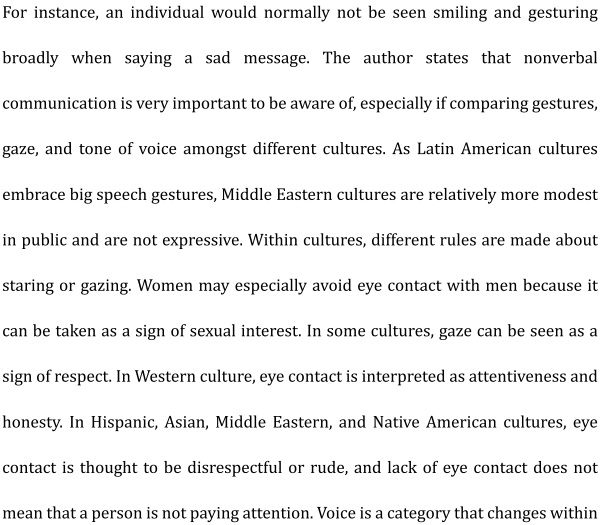
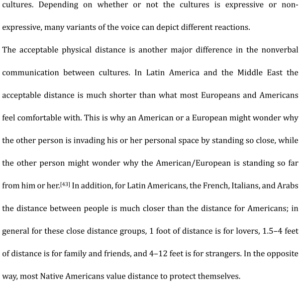
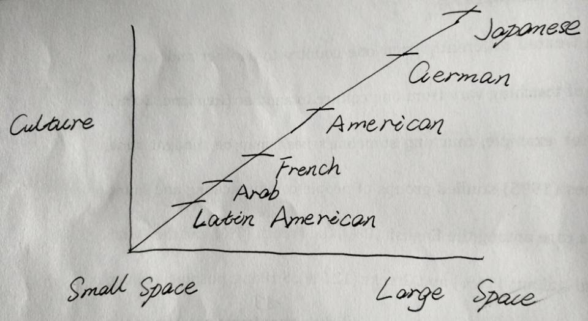

Nonverbal communication
Comparison
| BASIS FOR COMPARISON | VERBAL | NON-VERBAL |
|---|---|---|
| Meaning | the sender uses words to transmit the message to the receiver | take place between sender and receiver with the use of signs |
| Types | formal,informal | Chronemics, Vocalics, Haptics, Kinesics, Proxemics, Artifacts, Oculesics, Paralanguage |
| Time Consuming | no | yes |
| Chances of transmission of wrong message | rarely | most of the time |
| Documentary Evidence | yes, in case of written commmunication | no |
| Advantage | clearly understood and immediate feedback | emotions, status, lifestyle, feelings of the sender |
| Presence | doesn’t matter | must |
NVC (Nonverbal communication)
&&&&&
Q: What is NVC?
A: It is communication through sending and receivingwordless clues.
&&&&&
Q: The features of NVC.
A:
- Using signs
- Often transmitting wrong message
- Face to face
- Many different types
&&&&&
Q: What does NVC includes? (PK PC OH)
A:
- body language (kinesics)
- distance (proxemics)
- physical environments of voice (paralanguage)
- physical environments of touch (haptics)
- the use of time (chronemics)
- eye contact and the actions of looking while talking and listening, frequency of galances, patterns of fixation, pupil dilation, and blink rate (oculesics)
Q: Nonverbal elements of paralanguage. (6)
A: Voice quality, rate, pitch, volume, and speaking style, as well as prosodic features such as rhythm, intonation, stress.
Q: Nonverbal elements of written texts. (3)
A: Handwirting style, spatial arrangement of words, the physical layout of a page .
Q: The three principal areas of interaction beween individuals in NVC.
A:
Environmental conditionswhere communication takes placePhysical characteristicsof the communicatorsBehaviors of communicatorsduring interaction
Q: What is
Encoding?
A: The act ofgeneratinginformation such as facial expressions, gestures, and postures.
Q: What is
Decoding?
A: Theinterpretationof information from received sensations given by the encoder.
Importance
Q: Body signals comprise:
A:
- Physical features
- Consious and unconsious
- The mediation of personal space
First impression
Positive and negative impressions
Posture
Q: Please give some examples of body positioning to portray certain postures. (6)
A: Slouching, towering, legs spread, jaw thrust, shoulders forward, and arm crossing.
Q: Why posture can be
situation-relative？
A: People willchangetheir posture depending on the situation they are in.
Q: What can posture be used
to do? (3)
A: Determine a participant’s degeree of attention or involvement, the difference in status between communicators, and the level of fondness a person has for the other communicator, depending on body “openness”.
Q: What postures can lead to
positive sentiment? (2)
A: Mirror-image congruent postures, displaying a forwad lean or decreacing a backward lean.
Clothing
Q: The types of clothing that an individual wears convey
nonverbal cuesabout his or her: (4)
A: Personality, background and financial status, and how others will respond to them.
Q: An individual’s clothing style can
demonstratetheir: (7)
A: Culture, mood, level of confidence, interests, age, authority, and values/beliefs.
Gestures
Q: How gestures can be
made? (6)
A: Hands, arms or body; movements of the head, face and eyes.
Q: Please give some
categories of gestures.
A:
- emblems or quotable gestures
- speech independent or speech related gestures
Q;
How manyexpressionshuman facesare capable of?
A: 10,000
(This versatility makes non-verbals of the face extremelyefficient and honest, unless deliberately manipulated.)
Q: Displays of emotions can generally be categorized into two groups:
negative and positive. Discribe them.
A:
Negative emotionsusually manifest as increased tension in various muscles groups: (1)tightening of jaw muscles, (2)furrowing of forehead, (3)squinting eyes, or (4)lip occlusion.Positive emotionsare revealed by (1)the loosening of the furrowed lines on the forehead, (2)relaxtion of the muscles around the mouth, and (3)widening of the eye area. When individuals are truly relaxed and at ease, the (4)head will also tilt to the side, exposing our most vulnerable area, the neck.
Gestures can be subdivided into three groups:
Adapters
Some hands movements (are not considered to be gestures) consist of manipulations either of the person or some object(e.g. clothing, pencils, eyeglasses)–the kinds of scratching, fidgeting, rubbing, tapping, and touching that people often do with their hands.
The basis dispositional inferences of the speaker’s emotion(nervous, uncomfortable, bored).
Symbolic
Other hands movements (are considered to be gestures) with specific, conventionalized meanings.
Symbolic gestures are used intentionally and serve a clear communicative function.
Symbolic gestures are usually used in the absence of speech, but can also accompany speech.
Different meanings in defferent culture.
Conversational
The middle ground between adapters and symbolic gestures.
Do not refer to actions or words, but do accompany speech and are related to the speech they accompany.
Not seen in the absence of speech and are only made by the person who is speaking.
Distance
Q: What are
4 primary distance zones?
A:
intimate(touching to 18 inches) distance || familiar, closeness and trustpersonal(18 inches to 4 feet) distance || still close, the most comfortablesocial(4 to 12 feet) distance || business and classroompublic(more than 12 feet) distance || two-way communication is not desirable or possible
Eye contact
Q: Eye contact is the primary nonverbal way of indicating: (4)
A: Engagement, interest, attention and involvement.
Q: What will happen if an individual is
interested?
A: The pupils will dilate.
Q: How do people use their eyes to
indicateinterest?
A: Frequently recognized actions ofwinkingand movements of theeyebrows.
Q:
Disinterestis highly recognized when:
A:Littleornoeye contact is made in a social setting.
Q: How will Eye contact
influencepeople?
A: Thelongerthere is established eye contact between two people, the greater theintimacylevels.
Q: What are the
important cuesin NVC about eye contact?
A:
- The length of a gaze
- The frequency of glances
- Patterns of fixation
- Pupil dilation
- Blink rate
Q: How do we know someone is being
deceptive?
A: Their eyes tend toblink a lot more.
Q: What can be
predictive of deception?
A: Eyeaversion.
Across cultures
Q: Nuances across different aspects of nonverbal communication can be found in cultures all around the world. What can these
differencesbe besed in?
A:
- Be based in
preferences for mode of communication- Be based on
how cultures perceive the passage of time
Q:
Chronemicscan be categorized in two ways:
A:
Polychronic(when people do many activities at once and is common in Italy and Spain)Monochronic(when people do one thingat a time which is common in America)
Gestures
| Gestures | Countries | Meanings |
|---|---|---|
| sticking your tungue out | Western countries | mockery |
| …………………… | Polynesia | a greeting and a sign of reverence |
| clapping | North America | applauding |
| …….. | Spain | summon a waiter at a restaurant |
| Meanings | Countries | Gestures |
|---|---|---|
| yes | Northern Europe | nodding heads up and down |
| … | Greece | the downward nod |
| no | Northern Europe | shaking head from side to side |
| .. | Greece | the upward nod |
| goodbye | America | face the palm outward and move the hand side to side |
| ……. | Italy | face the palm inward and move fingers facing the other person |
| ……. | France and Germany | face the hand horizontal and move the fingers toward the person leaving |
Q: It is important to note that:
A: Gestures are used in moreinformalsettingand more often bychildren.
Displays of emotion
| Emotions | Countries | Meanings |
|---|---|---|
| laughter | Westernized Countries | amusement |
| …….. | Africa | wonder or embarrassment |
Arab and Iraniancultures
show emotionopenlyAsianculturesunacceptableto show emotion openly
Native Americanstend to be morereservedandless expressive with emotions.Frequent touchesare common forChinesepeople;however, such actions liketouching, patting, hugging or kissinginAmericaareless frequentandnot often publicly displayed.
Nonverbal actions
Lots of Examples!!!


Kinesics: movement and body position
Q: What are the
aspectsofkinesics? (5)
A: Face, eye contact, gesture, posture, body movements.
Q:
Kinesic messagescomprise: (3)
A: Posture, gaze, and facial movements.
Haptics: touching in communication
Q: What is
meainngcomveyed from touchhighly dependent upon? (4)
A: The culture, the context of the situation, the relationship between communicators, and the manner of touch.
In
Thaiculture, for example, touching someone’sheadmay be thoughtrude.
- Americans, the English, Germans and Northern Europeans are said to belong to
low-touch cultures, exhibiting very limited tactile contact in public.- Hispanics, people of Eastern European descents, Italians, the French, Arabs, and Jews are all said to belong to
high-touch cultures.
Proxemics
4 types of proxemics with different distances depending on the situation and people involved:
| Types | Description |
|---|---|
| Intimate distance | close encounters like embracing, touching, or whispering |
| Personal distance | close friends and family members |
| Social distance | acquaintances; workplace or school |
| Public distance | strangers or public speaking |
| Distance | Description |
|---|---|
| 0-50 cm | intimate lovers and family members |
| 50-120 cm | friends (personal distance) |
| 120-270 cm | acquaintances (social distance) |
| 270-… cm | public space, not belong to oneself |
| Behind | strangers speaking from behind are allowed to stand much more nearer |

Interaction
Q: When communicating, nonverbal messages can
interactwith verbal messaes in6 ways:
A: Repeating, conflicting, complementing, substituting, regulating and accenting/moderating.
Conflicting
Conflicting verbal and nonverbal messages within the same interaction can sometimes send opposing or conflicting message.
Complementing
Accurate intepretation of messages is made easier when nonverbal and verbal communication complement each other.
Substituting
Nonverbal behavior is sometimes used as the sole channel for communication of a message.
Chronemics
Monochronic time
- Things are done
one at a timeand time issegmentedinto precise, smallunits. - Time is a
preciousresource not to be wasted or taken lightly. - “Time is
tangible“ and viewed as acommodity.
Polychronic time
Severalthings can be done at once, andwiderview of time is exhibited and time is perceived inlarge fluid sections.- Much
lessfocused onthe preciseness of accounting for each and every moment, butmorefocused ontradition and relationships. - More focus on
relationships, rather than watching the clock.
Setting the stage for effective nonverbal communication
Q: How to inmprove your nonverbal communication effectively?
A:
- Learn to manage stress.
- Emotional awareness.
- Good at reading body language.
Q: Are emotions
contagious?
A: Yes.
Q: Emotional awareness enables you to:
A:
- Accrately
readother people.- Create
trustin relationships.- Show others that you
understand and care.- Know if the relationship is meeting your emotional needs, giving you the option to either
repairthe relationship ormove on.
Q: Tips for reading body language:
A:
- Pay attention to inconsistencies
- Look at nonverbal communication signals as a group
- Trust your instincts
Course Notes
&&&&&
The differences between Polychronic and Monochronic:
| Monochronic | Polychronic |
|---|---|
| Do one thing at a time | Do many things at once |
| Concentrate on the job | Are easily distracted and subject to interruptions |
| Take time commitments (deadlines, schedules) seriously | Consider time commitments an objective to be achieved, if possible |
| Are committed to the job | Are committed to people and human relationships |
| Adhere to plans | Change plans often and easily |
| Are concerned about not disturbing others; follow rules of privacy | Are more concerned with people close to them (family, friends, close business associates) than with privacy |
| Show great respect for private property; seldom borrow or lend | Borrow and lend things often and easily |
| Emphasize promptness | Base promptness on the relationship |
| Are accustomed to short-term relationships | Have strong tendency to build lifetime relationship |
本文地址 https://didongdongdi.github.io/2018/10/31/Intercultural-Communication-7-8/